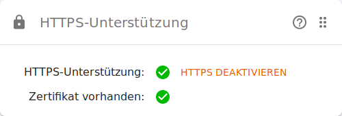

eBlocker Hilfe > FAQs > HTTPS Funktion (SSL/HTTPS)
Für eBlocker Pro und eBlocker Family Kunden.
Öffnen Sie im Browser setup.eblocker.com damit Sie das eBlocker Dashboard sehen. Alternativ können Sie auch die Seite eblocker.box aufrufen, um zu dem Dashboard zu gelangen.
Auf dem Dashboard finden Sie eine HTTPS Karte. Diese zeigt an, ob das eBlocker Zertifikat korrekt hinterlegt wurde. Die Überprüfung kann einige Sekunden dauern. Wenn beide Punkte in der Karte grün sind, hat der eBlocker das SSL-Zertifikat identifiziert.

Nach erfolgreicher Überprüfung sollten Sie auf einer HTTPS-Webseite das eBlocker Symbol oben rechts im Browser sehen.
Sollte die die HTTPS Karte nicht auf dem Dashboard liegen, dann sehen Sie oben rechts im Dashboard nach und aktivieren die HTTPS Karte.
Für eBlocker Base Kunden.
Der eBlocker Base kann das eBlocker Symbol nur auf HTTP-Seiten anzeigen.
Alle Funktionen Ihres eBlockers Base sind jedoch weiterhin aktiv; lediglich das Symbol fehlt.